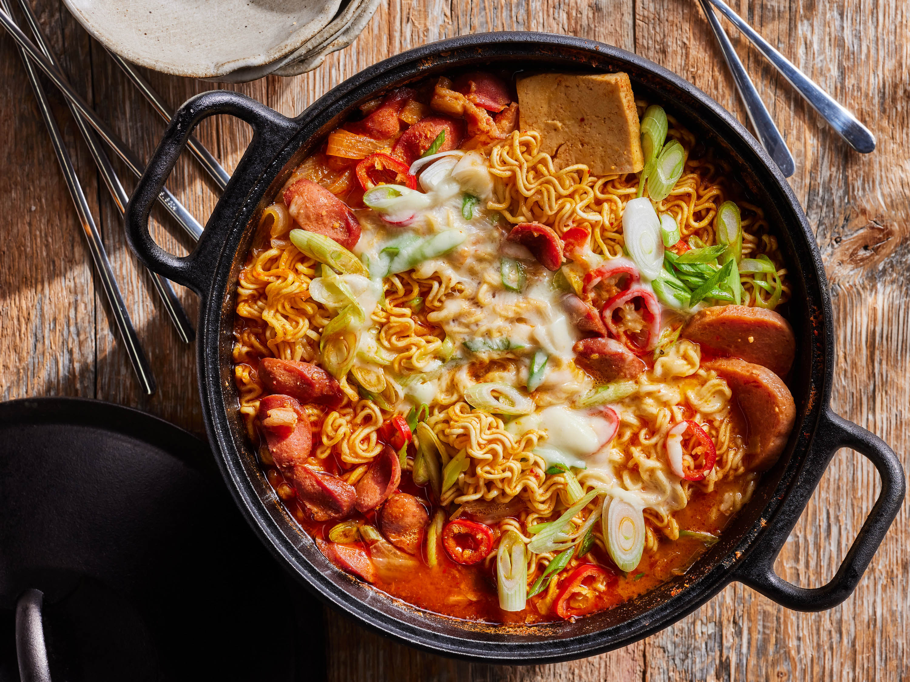

Buddae Jjigae Recipe Recipe

Description
Buddae Jjigae, often referred to as "Army Stew," is a unique and flavorful Korean dish that carries a historical significance. Originating during times of food scarcity, this stew creatively combines ingredients like sliced sausages, Spam or ham, tofu, kimchi, and other savory components. These elements are brought together in a spicy and hearty broth, enriched with the distinct flavors of gochugaru (Korean red pepper flakes), gochujang (Korean red pepper paste), and other seasonings. The result is a comforting and satisfying stew that symbolizes Korea's resourceful culinary evolution and brings together an assortment of tastes, textures, and histories in a single pot.
Ingredients
Main
- 1/2 cup sliced cooked sausage (such as hot dogs or Vienna sausages)
- 1/2 cup sliced cooked Spam or ham
- 1/2 cup sliced tofu
- 1/2 cup sliced onion
- 1/2 cup sliced kimchi
- 1/4 cup sliced mushrooms (button or shiitake)
- 1/4 cup sliced green onions
- 2 cups chicken or beef broth
- 1 Tbsp vegetable oil (for cooking)
Buddae Jjigae Soup Mix
- 1 Tbsp gochujang (Korean chili paste)
- 1 Tbsp gochugaruy (Korean chili flakse)
- 1 Tbsp soy sauce
- 1 tsp minced garlic
- 1 tsp sugar
- 1/2 tsp sesame oil
Optional
- Ramen noodles
- 1/4 cup shredded mozzarella cheese
- Eggs
Steps
- Heat vegetable oil in a pot over medium heat. Add sliced onions and sauté until translucent.
- Add sliced sausage, Spam or ham, tofu, mushrooms, and kimchi to the pot. Sauté for a few minutes until the ingredients start to cook and release their flavors.
- In a bowl, mix together gochugaru, gochujang, soy sauce, minced garlic, sugar, and sesame oil to create a spicy paste.
- Add the spicy paste to the pot and stir to coat the ingredients.
- Pour in the chicken or beef broth and bring the mixture to a simmer. Let it cook for about 10-15 minutes to allow the flavors to meld.
- Add the cooked ramen noodles to the pot and stir to combine. Cook for an additional 2-3 minutes until the noodles are heated through.
- Just before serving, add sliced green onions to the pot and give it a final stir.
- If desired, sprinkle shredded mozzarella cheese over the top of the stew and cover the pot to melt the cheese.
- Serve the Buddae Jjigae hot in the pot or transfer to individual serving bowls. Enjoy the flavorful and hearty stew!